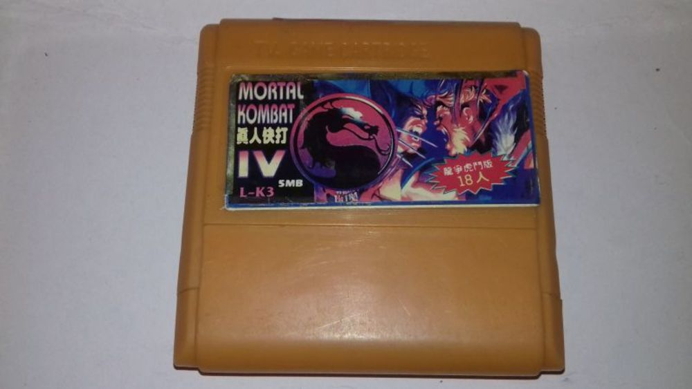
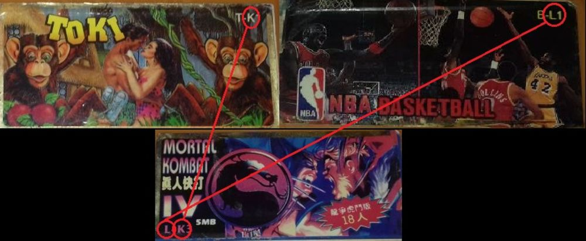
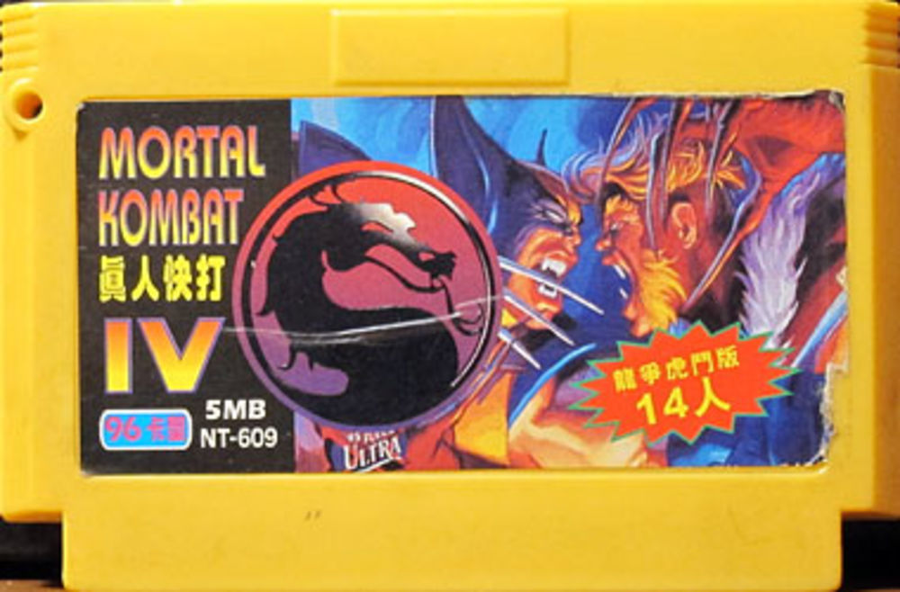
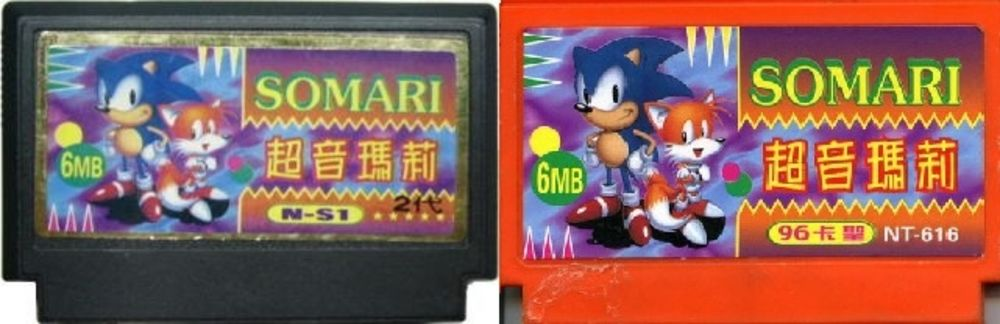
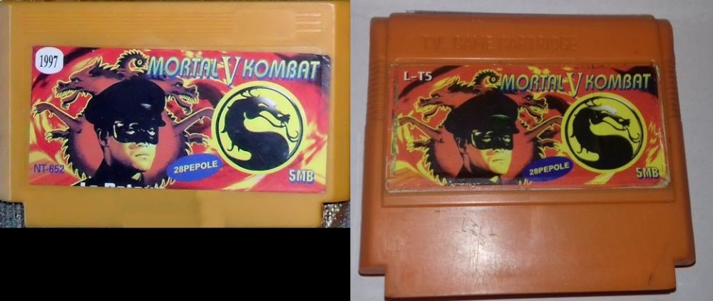
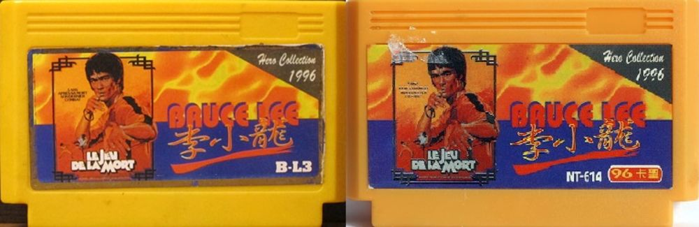
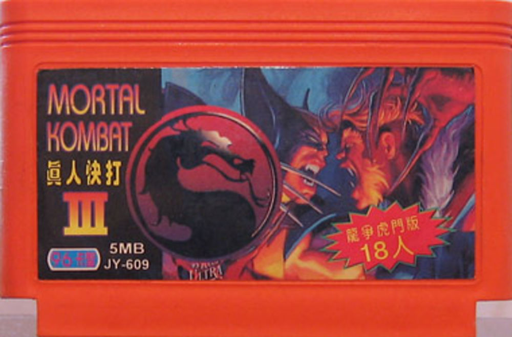
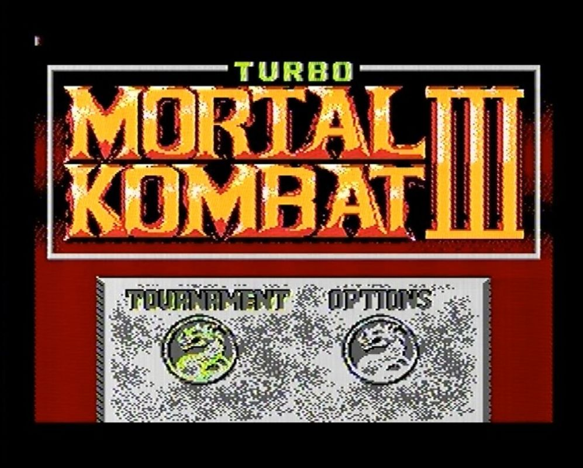
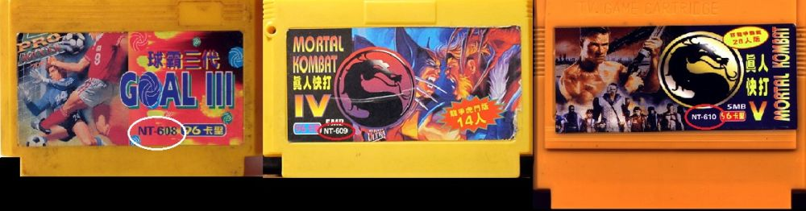
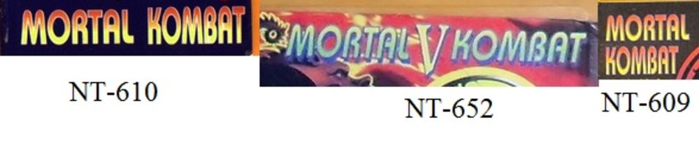

Интересности с картриджем L-K3 Mortal Kombat 眞人快打 IV
Дата написания статьи: 25 января 2019.Ссылка на пост ВК (оригинал): https://vk.com/wall-87396586_2496
Адаптировано для музея: AlexSRMD
Друзья всем привет. Для вас снова пишет админ номер 2 - Брейн.
Идея этого поста пришла неожиданно даже для меня самого, это произошло во время создания одного из видосов на второй канал ( про подборки я не забыл, буду выкладывать ). А конкретно речь идёт о картридже, на первый взгляд совершенно непримечательному = L-K3 Mortal Kombat 眞人快打 IV ( Фото 1 )
Интересности возникли еще с момента добавления картриджа на сайт и перевода его китайских иероглифов в названии - 眞人快打. Это сочетание иероглифов переводится как Глухие Люди. Вы спросите, это что шутка? А вот нет, подковёрный смысл заключается в том, что первый иероглиф, скорее всего намеренно, написан неправильно из-за чего рушится весь перевод. Правильное же написание Мортал Комбата на китайском - 真人快打. Говоря про неправильное написание на китайском языке - скажу что такой фокус встречается часто среди пиратских МК, но мы уходим от темы...
Следующее на что стоит обратить внимание - серийный номер, название и прочие надписи. Серийный номер пытается закосить под A-B1 серийный, однако же тут всплывает сразу два момента. Первый заключается в том, что я проанализировав множество картриджей на которых были подобные серийные номера пришёл к выводу, что эта вот попытка стандартизации китайских копий картриджей весьма неоднородна, потому как отличающиеся шрифты, одинаковые серийные номера с разными играми и разные версии обложек с одинаковыми серийниками и шрифтами, дают понять что подобные картриджи выпускались как минимум тремя разными производителями. Эту тему я рассмотрю в одной из следующих статей, а здесь это было сказано для того чтобы понять, что данный экземпляр один из примеров такого вот производителя. Сравнения ради, я решил поискать аналогичные картриджи с такими же буквами и пришел к выводу что они отличаются( Фото 2 ). А второй момент заключается в том, что очень похожий экземпляр был выпущен KaSheng`ом под номером 609 ( Фото 3 ). И вот феномен выпуска картриджей NT под типа А-В1 серию, от стороннего производителя я замечаю уже не в первый раз - аналогичные перевыпуски я видел на примере игр Somari, Mortal Kombat V, Bruce Lee Story - ( Фото 4,5 и 6 ). Вот и в данном случае, может мы наткнулись на аналогичный пример?
Я думал что да, но смешивает все карты то, что во-первых, на моём экземпляре написано 18人 - человек, стало быть, а на NT-картридже 14人 - человек. Это казалось бы подтверждает теорию о том, что NT-версия более ранняя, т.к. логика выпуска пиратских МК заключалась в выпуске оригинальных версий и только потом версий с накрученными бойцами, кстати надпись на этой самой красной капле - 龍爭虎門版 и обозначает примерно мол версия с накрученным ко-вом бойцов. Но тут, как говорится, нашла коса на камень...( Фото 7 )
Существует еще и вот такая версия этого же картриджа и тут сразу же вопросов возникает еще больше. Во первых - версия МК внутри моего картриджа ( Фото 8 ) это Mortal Kombat III Turbo( без надписи Midway ) и после этого мы понимаем, что цифра IV на обложке нам как бы врёт. При этом на этом картридже все в порядке и цифра правильная. Во-вторых на этом картридже мы видим с вами 18人, как и на моём, а на НТ - 14, как уже было видно. Тут казалось бы уже встает вопрос какая из них вышла раньше, но это только начало.
Конфуз номер два заключается еще вот в каком моменте - Оригинальный разработчик - Hummer Team нередко выпускал свои игры через распространителя игр JY Company, чей серийный номер мы и видим на образце с номером III, однако сразу впадаем в стопор в моменте, когда видим что оригинальные выпуски игр JY-серии заканчиваются на JY-130, никаких 609 там не было, и опять таки логика выпуска версии 18 бойцов перед версией 14 бойцов была бы крайне странна и нелепа, учитывая то, что я написал выше. При этом цифра номера игры соответствует реальности.
То есть в пользу этой версии говорит то, что JY картридж выпущен с правильной цифрой, по логике выпуска ими игр Hummer Team это тоже звучит более чем складно, но номер картриджа и кол-во бойцов вызывают сомнения.
А версия NT-картриджа данной игры имеет на обложке цифру IV по не очень понятной причине, при этом бойцов всего 14. Номер 609 в данном случае обоснован, потому что у KaSheng картриджи выходили по строгой нумерации - то есть между 609 были и 608, и 610 номера( Фото 9 ). И выпуск версии с 14 бойцами первее, как мне кажется более логичен, чем выпуск 18 бойцов. И в пользу этой версии говорит и еще один интересный факт. Если мы посмотрим на другие выпуски игр МК от KaSheng, то мы замечаем тот факт, что как минимум на трех разных играх этой серии на обложке используется одинаковый шрифт( Фото 10 ).
И вот в пользу версии первоисточника в виде NT картриджа аргументов выходит как то больше, но это странно, потому как JY всегда издавал Hummer Team игры и выпуск их образца тоже логичен, притом что он верный с точки зрения правильного названия. И вот тут однозначно сложно сказать в пользу какой версии я бы качнулся.
Ясно одно, что мой картридж является скорее всего гибридом - потому как имеет цифру IV на обложке( явно с NT образца ), 18 Бойцов ( с JY-версии ) и собственный серийник в виде попытки подражать А-В1 серии. Выпущен не раньше 1996 года. А сама картинка на картридже, о которой уже отдельно напишу потому что тут не хватает места для прикрепленных картинок, создана в 1995 году.
В итоге получилось своего рода расследование, которое произошло во-многом потому что, Админ 1 когда я выкладывал видео на второй канал заметил что яркость слишком высокая, я проверил и понял, что случайно наложил эффект в Вегасе и тут как говорится понеслось...
Сложно подвести какую-то черту под сказанным, вероятно таких вот чудес с картриджами существует еще много и в дальнейшем как я уже сказал - новые подборки видео со второго канала ( кто хочет смотреть их раньше, чем выкладываю в группе то подписывайтесь - https://www.youtube.com/channel/UC6CIC-qTGjxDZFdJ4o0a1Bw и и конечно же новые статьи в данном паблосе еще будут. Так что на сегодня думаю можно поставить не точку, но запятую...
Данный картридж в музее: https://superbrain1997-retro-museum.herokuapp.com/cartridges/242
Нейрбов А.А. = Второй админ
Галерея









